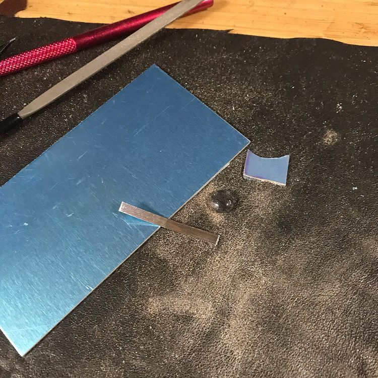
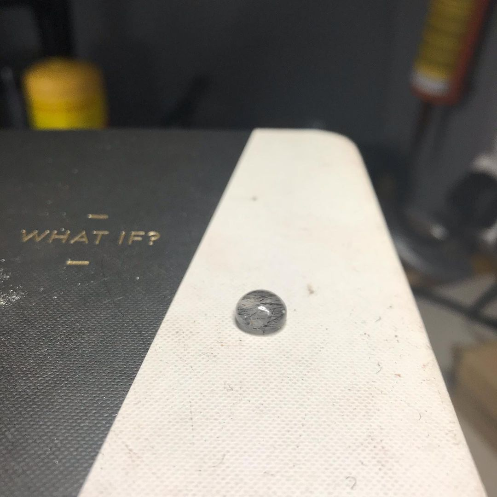
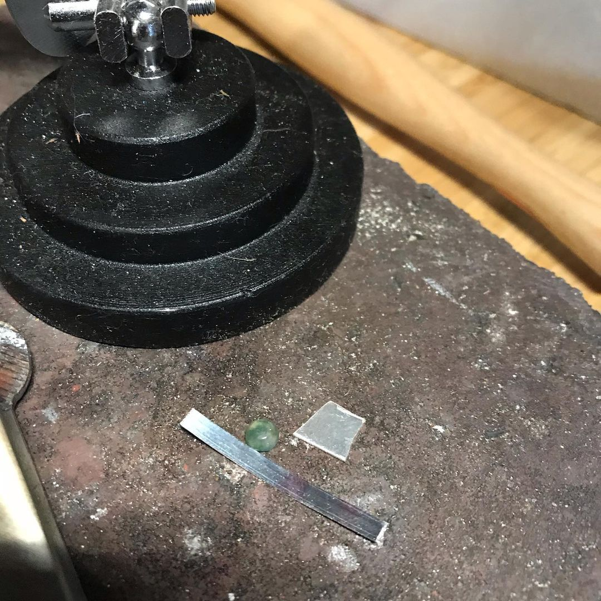
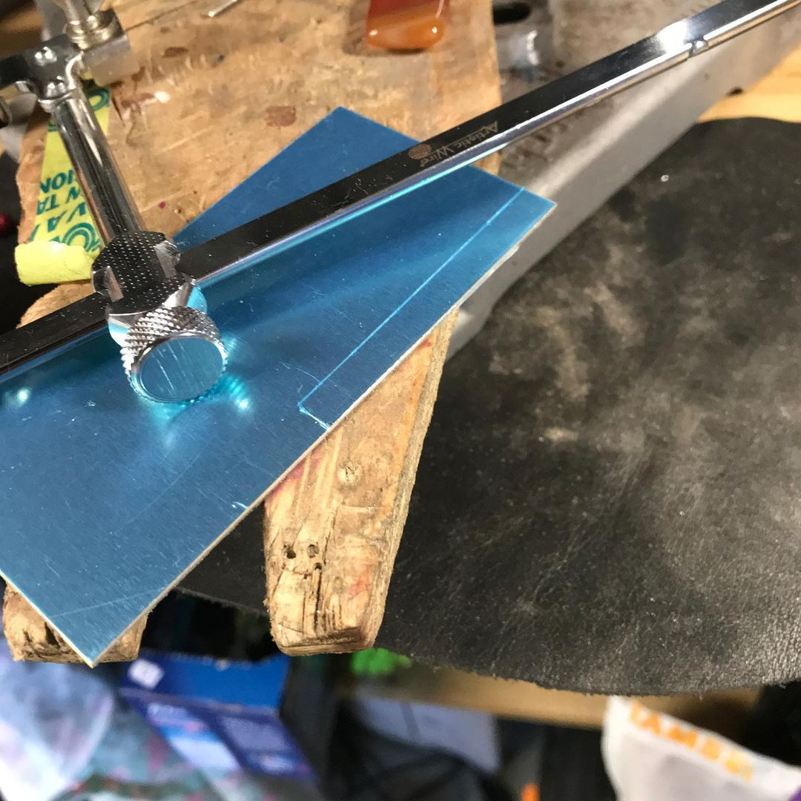
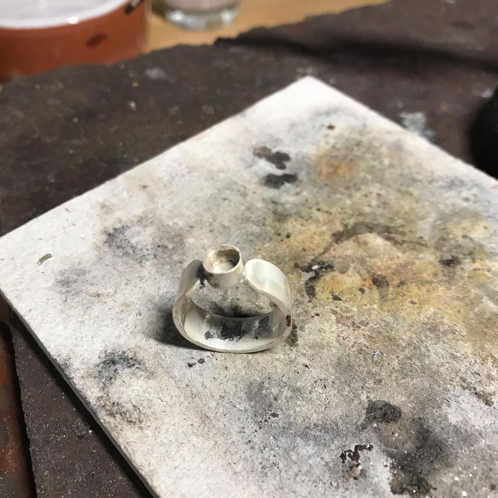
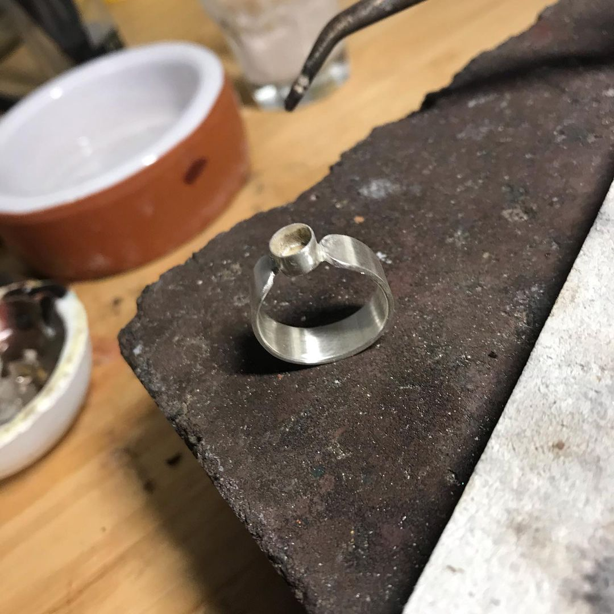
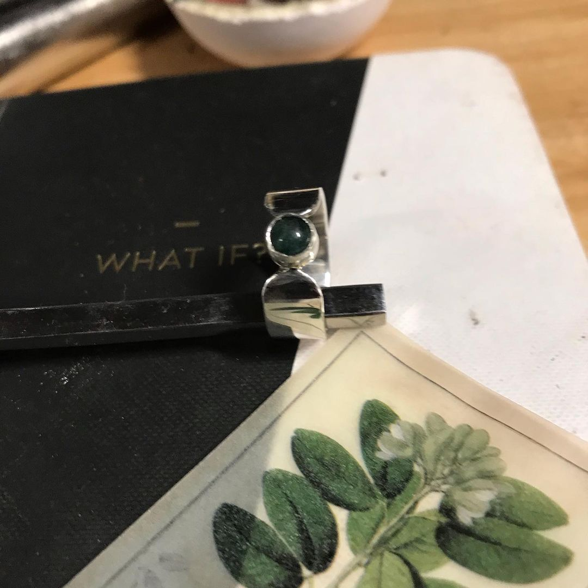

My Process...
Serendipity plays a significant role in how I design my pieces. A small pebble or shell from a nearby beach, a walk in the woods, anything can be inspiring when you are looking for it.
All designs start life in my trusty sketchbook, and then it's off to the bench to begin cutting, shaping, casting and polishing until I am happy to release it to my follower on Instagram.
Silver is a beautiful medium to work in, and I love every minute of it.
What do I make:
Currently I focus on; silver earrings, silver rings, silver cufflinks, silver bracelets and silver necklaces but who knows what I wil make next.
